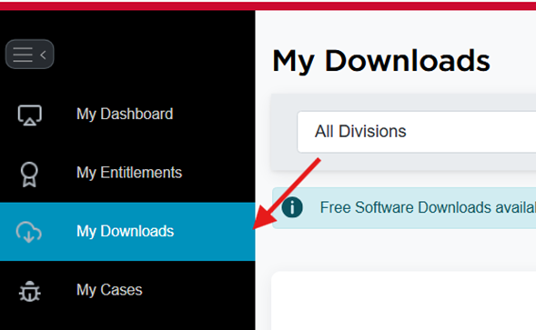
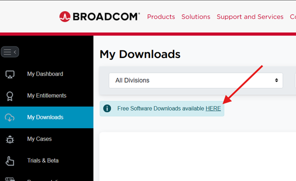
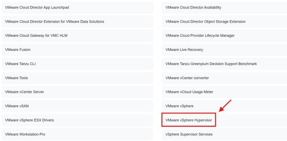
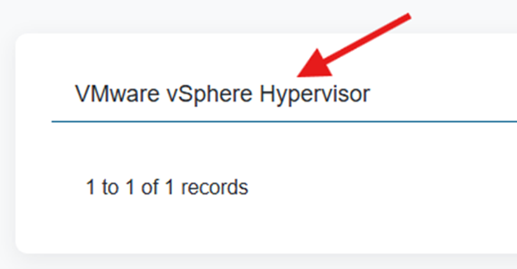
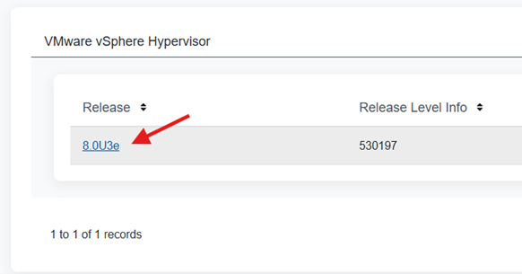
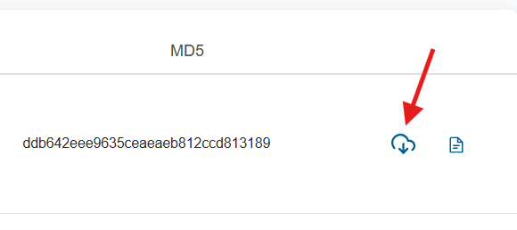
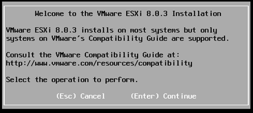
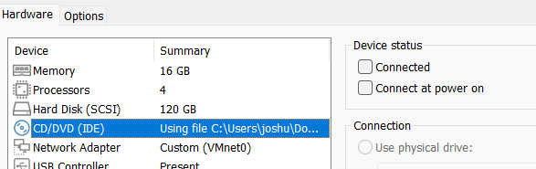

Building a nested virtualization environment for testing and training.
To download the VMware ESXi ISO, you first need to create an account on Broadcom’s portal. Once logged in, you’ll be redirected to your dashboard. On the left-hand sidebar, select “My Downloads” to access the software catalog.
Inside the downloads page, click on the link that says “Free Software Downloads available HERE”.
A list of available VMware software will appear. Scroll down and select “VMware vSphere Hypervisor” from the list.
Next, click on the listed product name “VMware vSphere Hypervisor” again to open the available versions.
Choose the latest available release — in this case, 8.0U3e.
Finally, click on the cloud download icon to begin the ISO download. Once complete, you’ll have your VMware ESXi installer ready to use in your lab setup.
In this section, we’ll configure the VMware ESXi ISO inside VMware Workstation Pro to create a nested virtualization environment. This process includes creating a new virtual machine, assigning hardware resources, and customizing network settings to ensure the ESXi host runs efficiently.
On the next screen, choose the option Installer disc image file (ISO) and browse for the VMware ESXi ISO file that you downloaded earlier.
By default, two processor cores are sufficient. However, for better performance during nested virtualization, it’s recommended to allocate 2 processors with 2 cores each (a total of 4 virtual cores).
The minimum requirement for ESXi is 8 GB of RAM. However, allocating 12–16 GB will provide smoother performance, especially if you plan to run multiple virtual machines inside ESXi.
For now, select Do not use a network connection. We’ll manually configure a custom network adapter later for better control and connectivity.
When prompted to select the I/O Controller Type, choose Paravirtualized SCSI (PVSCSI). This option is preferred because:
Click Finish to complete the virtual machine creation, but do not power it on yet. We’ll first configure a custom network to ensure connectivity between your host and the ESXi VM.
✅ Your VMware ESXi virtual machine is now fully configured — with optimized CPU, memory, storage, and network parameters — ready for the installation phase.
In this section, we’ll go through the complete process of setting up and installing VMware ESXi within a virtual machine using VMware Workstation Pro. This includes enabling nested virtualization, configuring the VM, and finalizing the ESXi installation.
Before beginning the installation, it’s crucial to enable nested virtualization. This allows the virtualized ESXi host to use your physical CPU’s virtualization features (VT-x or AMD-V), which are required to run other virtual machines inside it.
(If they are missing, add them manually at the end of the file, then save and close it.)
Now power on your VM to start the installation. Wait until you see the welcome panel of the ESXi installer.
Before rebooting, open your Virtual Machine Settings and go to the CD/DVD (IDE) section.
Now you can safely reboot your virtual machine. When it starts, you should see your IPv4 and IPv6 addresses on the screen.
🎉 Congratulations! You’ve successfully completed the VMware ESXi Host Client installation. Your virtualized environment is now ready to host and manage additional virtual machines.